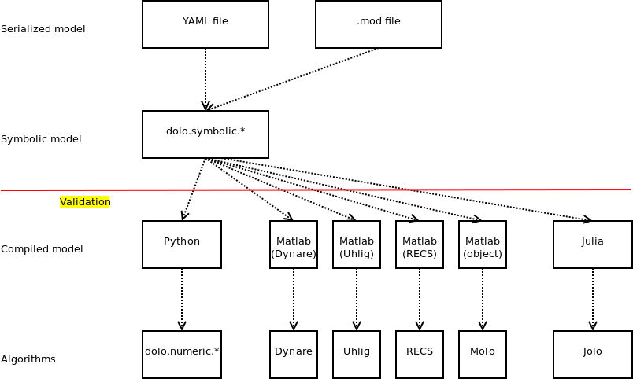

Structure of dolo
Here is how the code in dolo is organized :
- import serialized model: YAML file / modfile
- currently in dolo.misc.yamlfile and dolo.misc.modfile
- symbolic model: dolo.symbolic.*
- timed symbols and taggable equations (dolo.symbolic.symbolic)
- symbolic model object (dolo.symbolic.model)
- model-types definitions (dolo.symbolic.recipes)
- model-type checkers (dolo.symbolic.validate)
- compilation routines: dolo.compiler.*
- generic function to transform a multiargument symbolic function to a python/matlab/julia numeric function: dolo.compiler.compiler_function*
- transform a symbolic model to a numeric model according recipes: dolo.compiler.compiler_*
- numerical methods: dolo.numeric.*
- pure algorithms: take matrices or numerical functions as input
- solution algorithms: can take compiled models of certified type as input
- commands (to be done)
- define user-friendly commands
